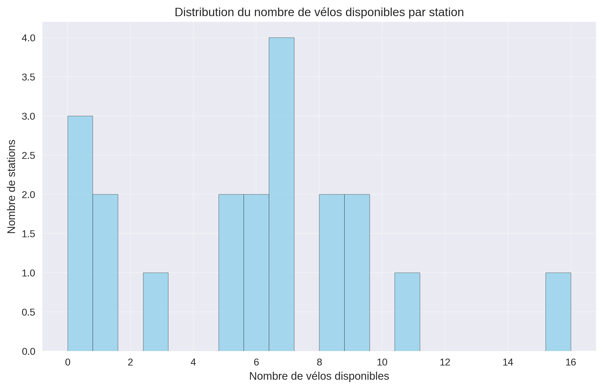
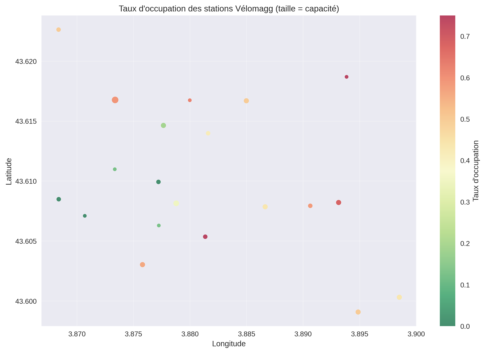

Visualisations Statiques
Graphiques générés automatiquement à partir des données VéloMAG
Distribution des Vélos

Répartition du nombre de vélos disponibles par station
Voir en grandCarte d'Occupation

Visualisation géographique des taux d'occupation
Voir en grandTop Stations

À propos de ces visualisations
Ces graphiques sont générés automatiquement à partir des données en temps réel de l'API VéloMAG. Ils sont mis à jour lors de chaque exécution du script d'analyse.
Dernière mise à jour: --